Las mismas notas, números y textos de las láminas de hoy, con el estilo nuevo. Ahora son angostas: en el teléfono se ven completas, sin deslizar. Las explicaciones van como texto debajo de cada lámina.
Mes 1
Clase 1Los 7 grados de la escala + la octavaDe DO grave (en la línea adicional de abajo) a DO agudo (3.er espacio). Cada nota lleva su grado, su nombre y su cifrado. El 1 y el 8 son la misma nota: una octava.Clase 4El pentagrama: 5 líneas y 4 espaciosLas líneas y los espacios se cuentan de abajo hacia arriba.
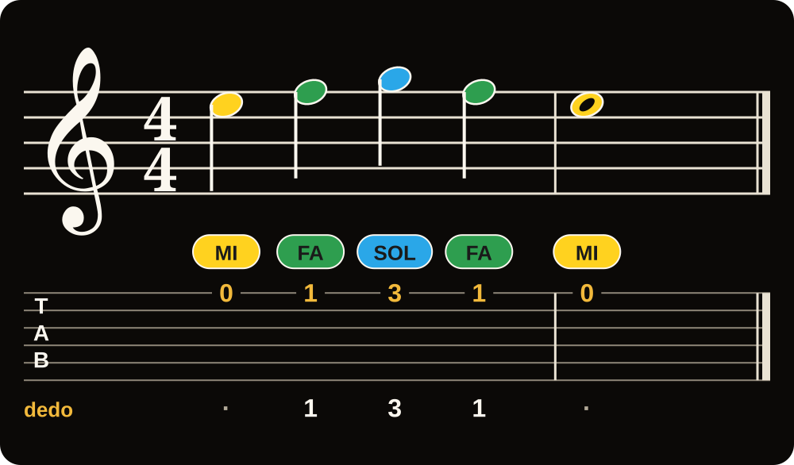
Clase 4MI, FA y SOL en la 1.ª cuerdaMI al aire (0), FA en el traste 1 con el dedo 1 y SOL en el traste 3 con el dedo 3. En la tablatura, la línea de arriba es la 1.ª cuerda.
Mes 2
Clase 5Ritmo en negrasUna negra = un tiempo. Di «ta» en cada nota y lleva el pulso con el pie.Clase 5Figuras musicales y silenciosCuánto dura cada figura, su silencio y la sílaba para leerla. Los cuadros dorados son los tiempos que ocupa.
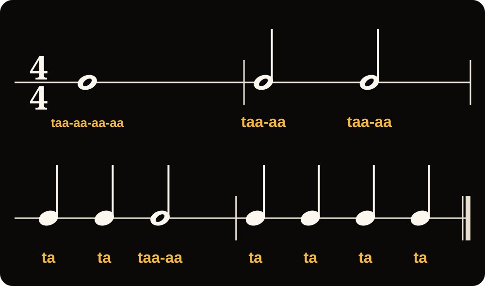
Clase 5Ritmo con redondas, blancas y negrasAlarga la sílaba mientras la nota sigue sonando: «taa-aa» dura dos tiempos.Clase 5Ejercicio 1-2-3-4Un dedo por traste: dedo 1 en el traste 1, dedo 2 en el 2… Empieza en la 6.ª cuerda y sube hasta la 1.ª.
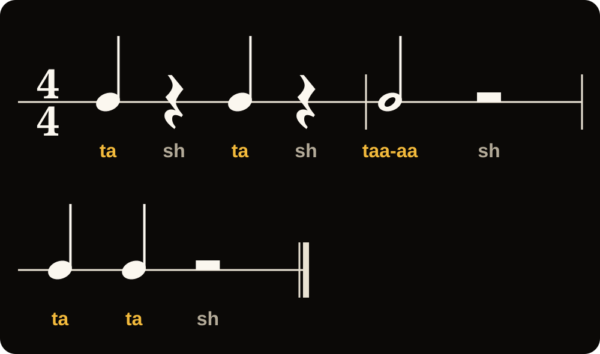
Clase 6Ritmo con silenciosEn el silencio no se toca: di «sh» y sigue contando el tiempo.Clase 6Compases de 2/4, 3/4 y 4/4El número de arriba dice cuántos tiempos tiene cada compás. El primer tiempo es el fuerte.Clase 6SI, DO y RE en la 2.ª cuerdaSI al aire (0), DO en el traste 1 con el dedo 1 y RE en el traste 3 con el dedo 3.Clase 7Ritmo con corcheasDos corcheas unidas = un tiempo: «ti-ti».
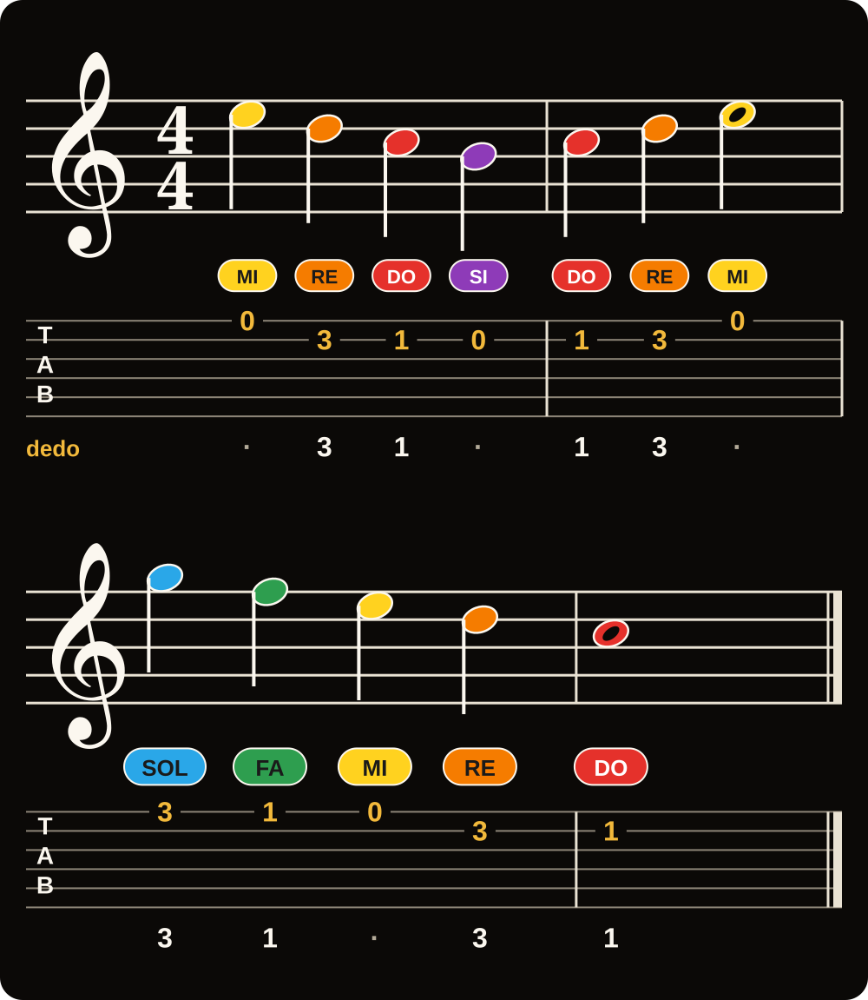
Clase 7Lectura en la 1.ª y la 2.ª cuerdaAhora se combinan las dos cuerdas. Mira la tablatura para saber en qué cuerda va cada nota.Clase 8Himno de la alegríaLa primera melodía completa, solo con la 1.ª y la 2.ª cuerda.
Mes 3
Clase 9Em y EMEM es Em más el dedo 1 en la 3.ª cuerda, traste 1. «Qué es un acorde» ya la explica la lámina G-12 de la sección 3.Clase 10Tonos y semitonosEn la guitarra, 1 traste = 1 semitono y 2 trastes = 1 tono. En la escala de DO, entre MI–FA y entre SI–DO hay solo un semitono.
Clase 10Am y ALas dos con la 6.ª cuerda sin tocar (✕). En A, los dedos 1, 2 y 3 van juntos en el traste 2.Clase 11D · Re mayorSolo se tocan las 4 cuerdas de abajo: la 6.ª y la 5.ª no suenan.Clase 11Rasgueos básicosAbajo en el número y arriba en la «y». Hacia abajo suena más fuerte; hacia arriba, más suave.
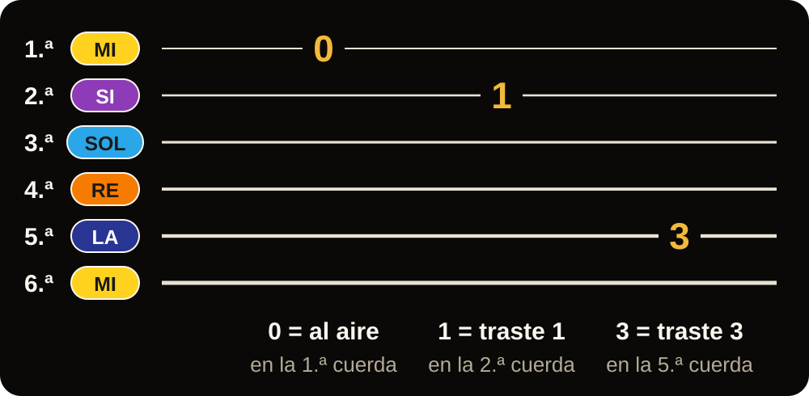
Clase 11Cómo leer la tablaturaCada línea es una cuerda (la de arriba es la 1.ª). El número dice qué traste pisar.
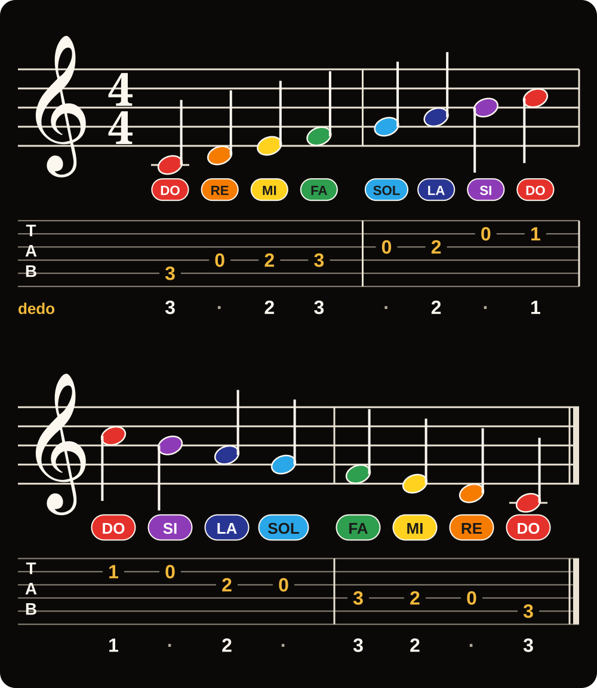
Clase 11Escala de DO mayorSube de DO a DO y vuelve a bajar, con la tablatura y el dedo de cada nota.Clase 12Los 5 acordes del Nivel 1Em, E, Am, A y D para repasar todo junto.
Nivel 2
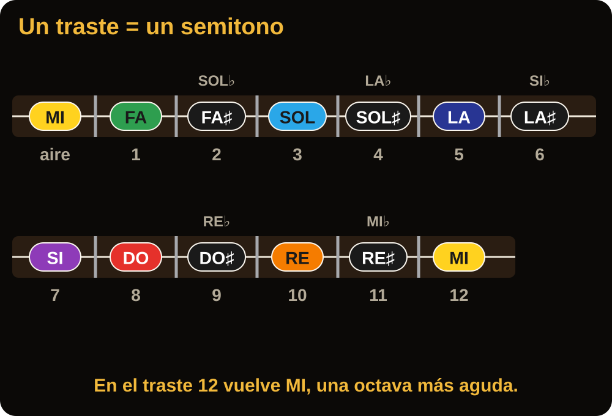
Clase 13La escala cromáticaEn la 1.ª cuerda cada traste sube un semitono. Las notas con ♯ o ♭ van en negro. Entre MI–FA y SI–DO no hay nota en medio.Clase 14Las notas de la primera posiciónTrastes 0 a 3 en las seis cuerdas. Dedo 1 en el traste 1, dedo 2 en el 2 y dedo 3 en el 3. Los bordones son las cuerdas 4, 5 y 6.Clase 15Escala de SOL mayorDe SOL grave (6.ª cuerda, traste 3) a SOL agudo (3.ª al aire). Los círculos dorados son los grados; d1, d2, d4, el dedo. Tiene un FA♯.
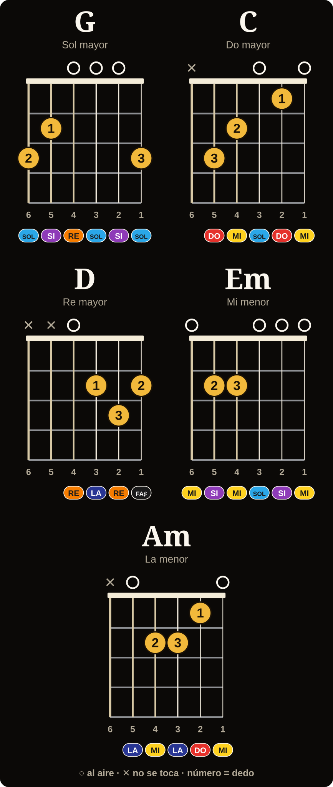
Clase 16Mis cinco acordesG, C, D, Em y Am con las notas que suenan en cada cuerda.
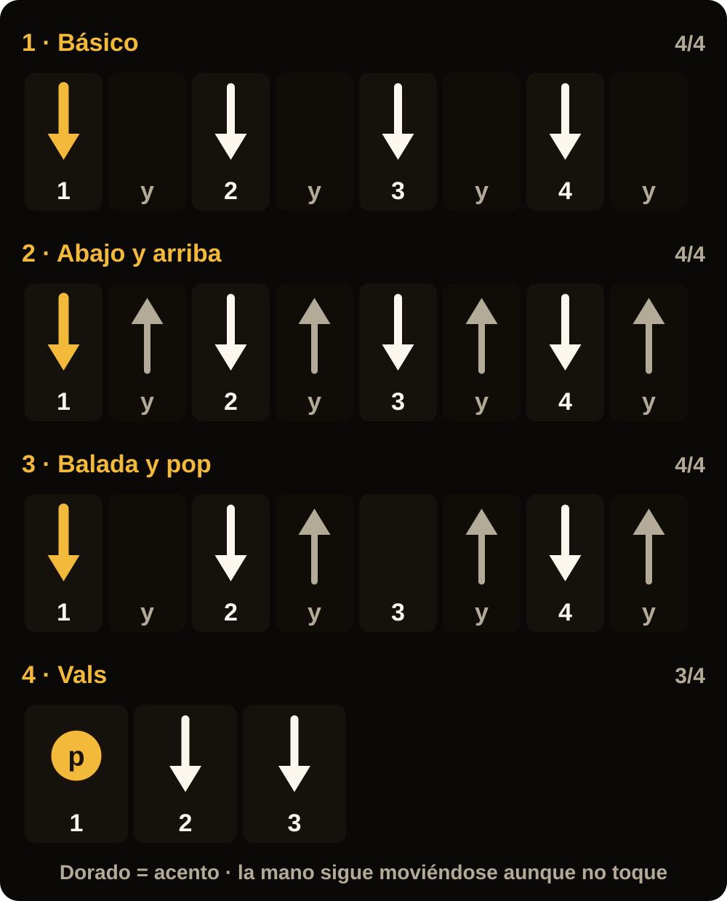
Clase 17Patrones de rasgueo↓ abajo · ↑ arriba · la flecha dorada es el acento. En el vals, el pulgar toca el bajo en el 1 y se rasguea suave en el 2 y el 3.
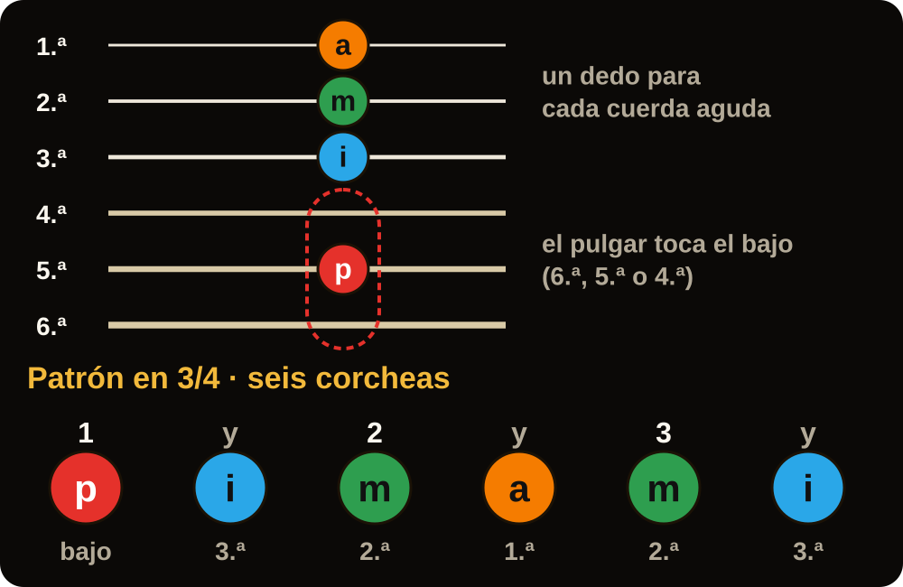
Clase 18El arpegio p, i, m, aEl pulgar toca el bajo y cada dedo tiene su cuerda aguda: i la 3.ª, m la 2.ª y a la 1.ª.Clase 19Escala de DO mayor con sus gradosDel DO de la 5.ª cuerda (traste 3) al DO de la 2.ª (traste 1). Los grados van en números romanos: I = DO, IV = FA, V = SOL… VIII vuelve a ser DO.
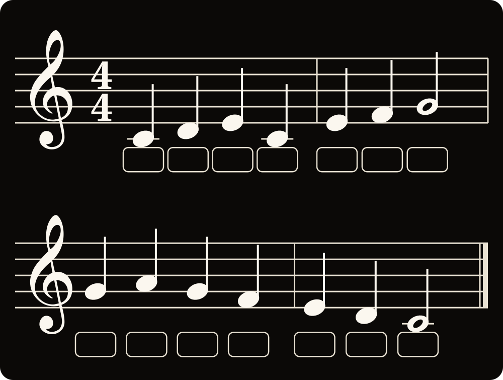
Clase 19Lectura sin color · «Primer paseo»Composición AMA. Escribe el nombre de cada nota en su cuadro y después tócala.Clase 20Los acordes de la tonalidad de DOSobre cada grado se forma un acorde: mayor (I, IV, V), menor (ii, iii, vi) o disminuido (vii°). En F, el dedo 1 pisa la 1.ª y la 2.ª: tu primera mini-cejilla.Clase 21La cejilla: F y BmEl dedo 1 pisa varias cuerdas a la vez. Pulgar detrás del mástil, el dedo 1 recto y pegado al traste. Revisa que cada cuerda suene limpia.Clase 22Acordes de séptimaAl acorde mayor se le suma una cuarta nota, la séptima. Suenan con ganas de ir al acorde siguiente.Clase 23Toco con expresiónLas dinámicas dicen qué tan fuerte o suave se toca; la forma, cómo se ordenan las partes (A estrofa, B coro).
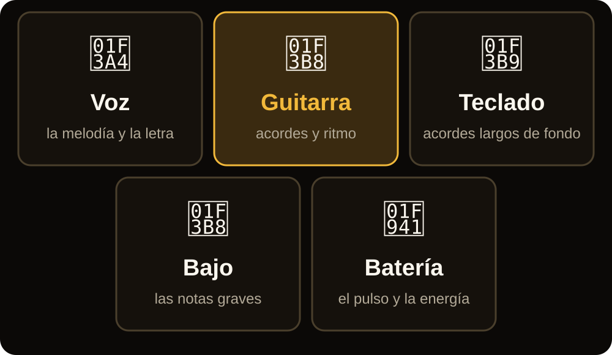
Clase 24Tocamos en bandaCada instrumento tiene su tarea. Escucha a la batería, toca más suave si hay teclado y mira al líder para las entradas y el final.
Nivel 3
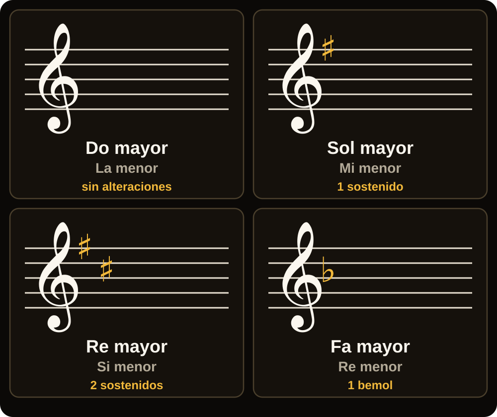
Clase 25La armaduraLos ♯ o ♭ del principio valen para toda la canción. Cada armadura sirve a una tonalidad mayor y a su relativa menor.Clase 25Dos escalas menoresLa menor (relativa de Do mayor) y Mi menor (relativa de Sol mayor). Fórmula T-S-T-T-S-T-T. La tónica va con un aro dorado.Clase 26Acordes de quintaSolo la nota base (1), su quinta (5) y la octava (8). G5 y C5 son móviles: la forma no cambia y la nota base da el nombre.
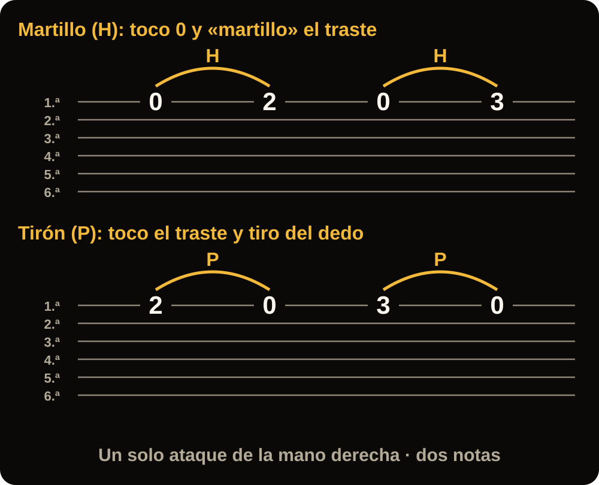
Clase 27Los ligadosMartillo (H): el dedo cae con fuerza justo detrás del traste. Tirón (P): el dedo jala la cuerda un poco hacia el piso al soltarla. Las dos notas deben sonar parejas.
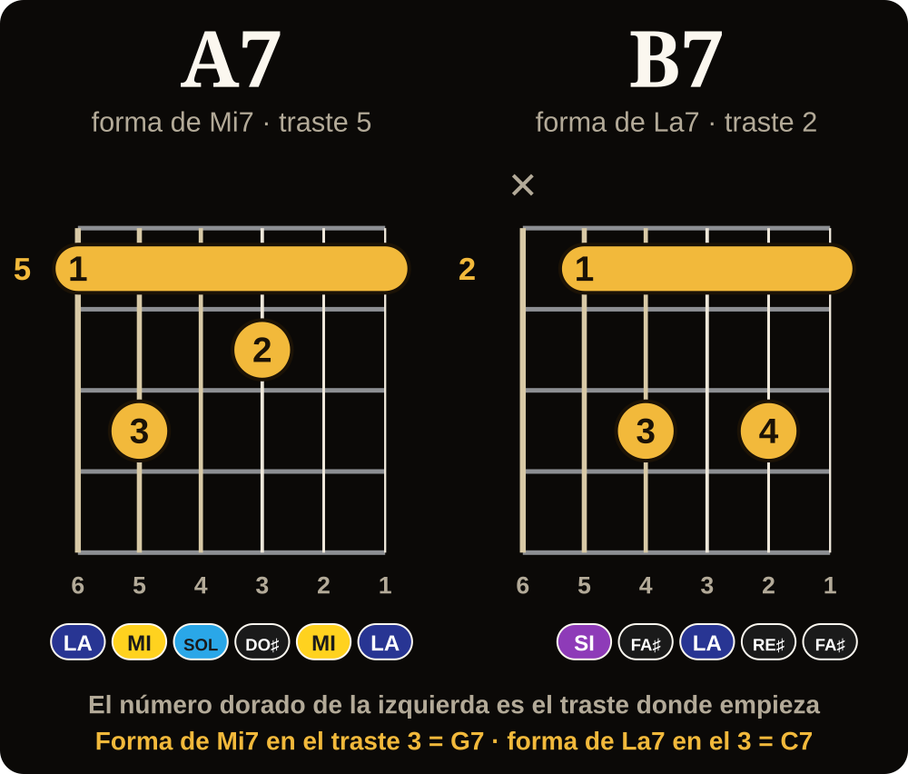
Clase 28Séptimas móviles con cejillaA7 con la forma de Mi7 en el traste 5 y B7 con la forma de La7 en el traste 2. Muévelas: en el traste 3 son G7 y C7.
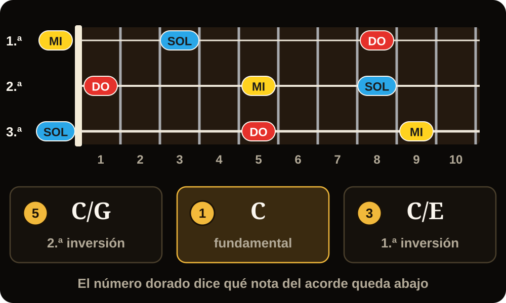
Clase 28Un acorde, tres posicionesEl acorde de C en las cuerdas 1, 2 y 3: segunda inversión (SOL abajo), fundamental (DO abajo) y primera inversión (MI abajo).Clase 29La familia de los acordesTónica (reposo), subdominante (alejamiento) y dominante (tensión), y las cuatro cadencias más usadas.Clase 30Estilos de acompañamientoLa misma progresión cambia de carácter según el ritmo: balada, pop, vals, caribeño y shuffle.Clase 31Escala mayor móvilDos octavas sin cuerdas al aire, aquí en SOL. Con la tónica en el traste 5 es LA mayor; en el traste 8, DO mayor. Los dedos no cambian.Clase 32Pentatónica de LA menor · caja 1Cinco notas: LA, DO, RE, MI y SOL, con el dedo 1 en el traste 5. Sobre Am – F – G – Am cualquier nota suena bien: empieza y termina en LA.Clase 33Estudio en DoComposición AMA al estilo de Sor, en 3/4: en cada compás p (bajo), i y m. Lento, legato y con dinámicas.
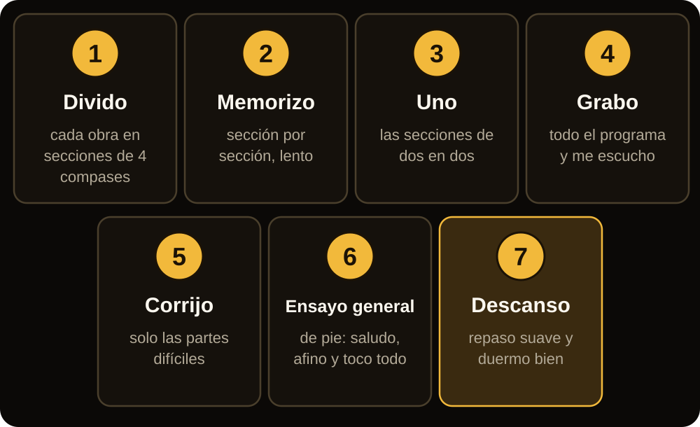
Clase 35Mi semana de ensayoSiete días, 30 minutos al día. Antes de tocar: respira lento 4 veces; si te equivocas, sigue; mira un punto fijo o a una persona amiga.Clase 36Mi presentación finalCuatro partes, unos 8 a 10 minutos: escala, obra, canción e improvisación.
5 · Láminas técnicas redibujadas · Piano
El mismo estilo de guitarra para el teclado. Las partes del piano, la postura y los dedos quedan como están hasta tener sus fotos.
Nivel 1
Clase 1Las teclas blancasLas 7 notas con su color y su cifrado. DO está justo a la izquierda del grupo de 2 teclas negras; después de SI vuelve DO.Clase 1Los 7 grados y su octavaSiete grados, uno por nota, y la octava: la escala empieza y termina en DO.Clase 3Las cuatro cualidades del sonidoAltura, duración, intensidad y timbre en el piano: derecha agudo, izquierda grave; tecla abajo = largo; más peso del brazo = fuerte.Clase 3Grupos de 2 y 3 teclas negrasEse dibujo se repite en todo el teclado: es el mapa del piano. DO va a la izquierda del grupo de 2 y FA a la izquierda del grupo de 3.Clase 3La octavaTodos los DO tienen el mismo color; el número dice cuál es. DO4 es el DO central.Clase 4El DO central en el pentagramaDesde DO, cada nota sube un paso: línea adicional, debajo de la 1.ª línea, 1.ª línea, 1.er espacio y 2.ª línea.Clase 4Posición de DOUn dedo para cada tecla, con las dos manos. La izquierda va una octava más abajo.
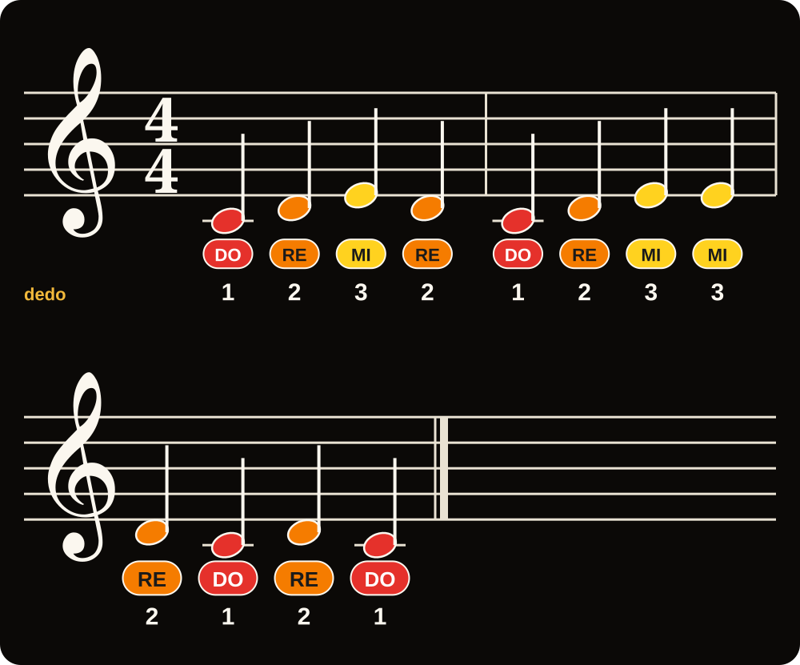
Clase 4DO, RE y MIPrimera lectura con la mano derecha y sus dedos.
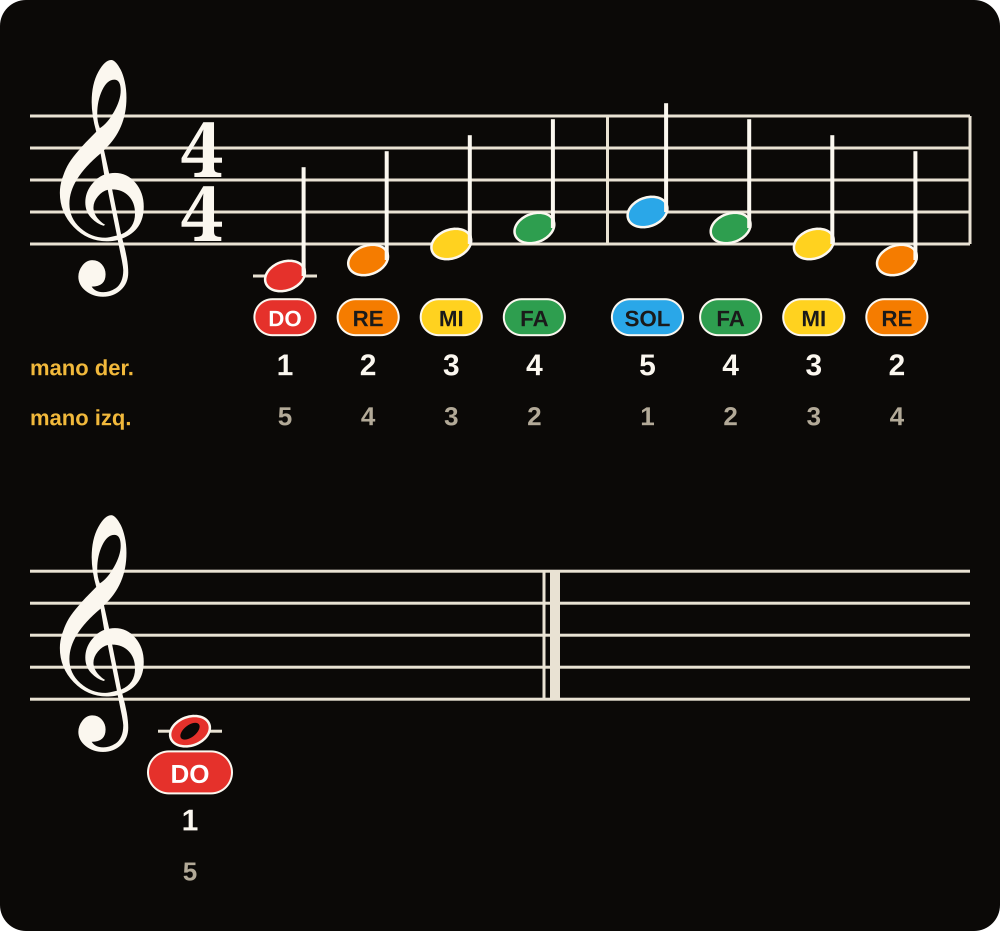
Clase 5Cinco dedosSube y baja de DO a SOL. Mano derecha arriba, mano izquierda debajo.
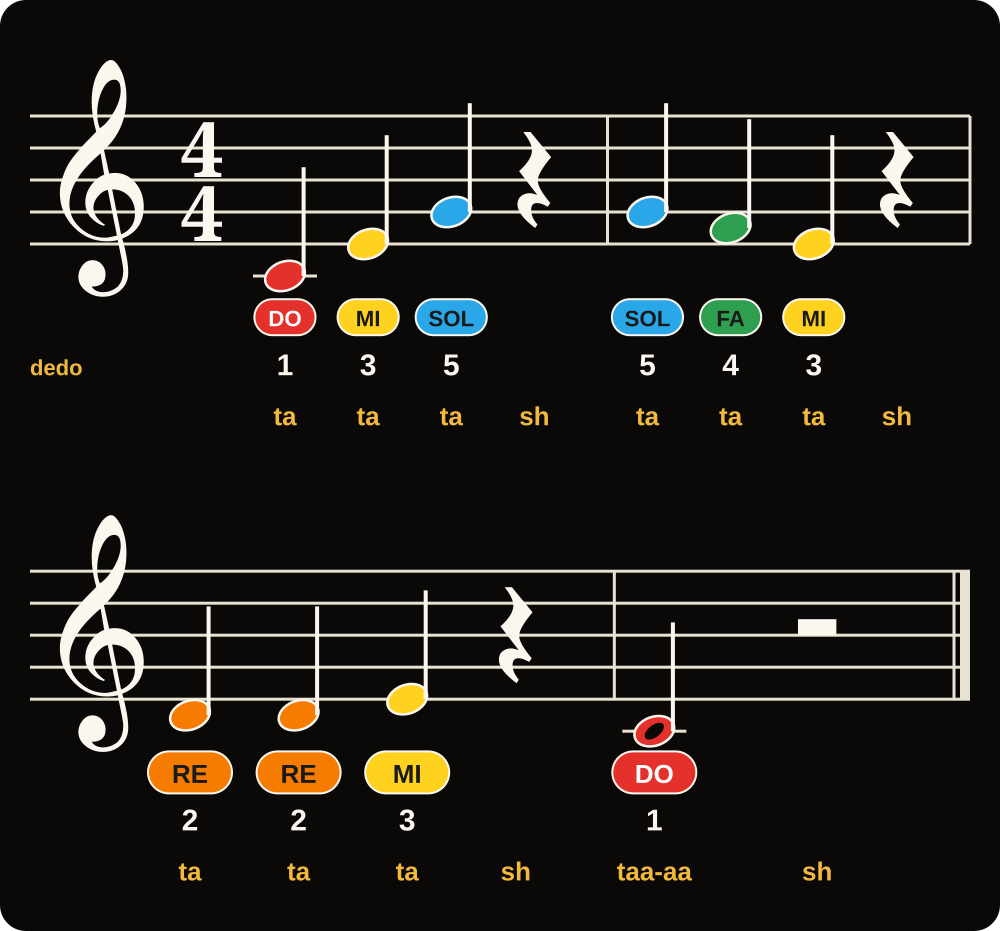
Clase 6Lectura con silenciosEn el silencio no se toca: di «sh» y sigue contando.Clase 6Vals en 3/4La mano izquierda toca DO en el tiempo 1 de cada compás: UN-dos-tres.Clase 7CorcheasDos corcheas unidas = un tiempo: «ti-ti». Abajo, cómo se cuenta: 1 y 2 y…
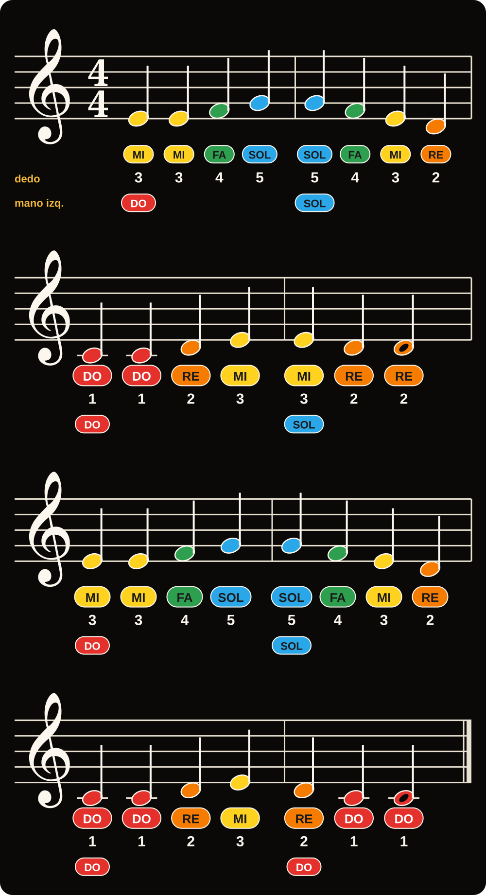
Clase 8Himno de la alegríaDos frases con la mano derecha; la mano izquierda toca una redonda en cada compás.Clase 8El himno con los dedosCinco notas, cinco dedos: cada dedo vive en su tecla. La frase 1 pregunta (termina en RE) y la 2 responde (termina en DO).Clase 9Construyo una tríadaTocar una, saltar una: DO (1), MI (3) y SOL (5) forman el acorde de DO mayor.Clase 9El acorde de DO mayorTres notas al mismo tiempo. DO, la nota de abajo, es la fundamental: le da el nombre.Clase 10Tono y semitonoEntre MI–FA y SI–DO no hay tecla negra en medio: son semitonos.
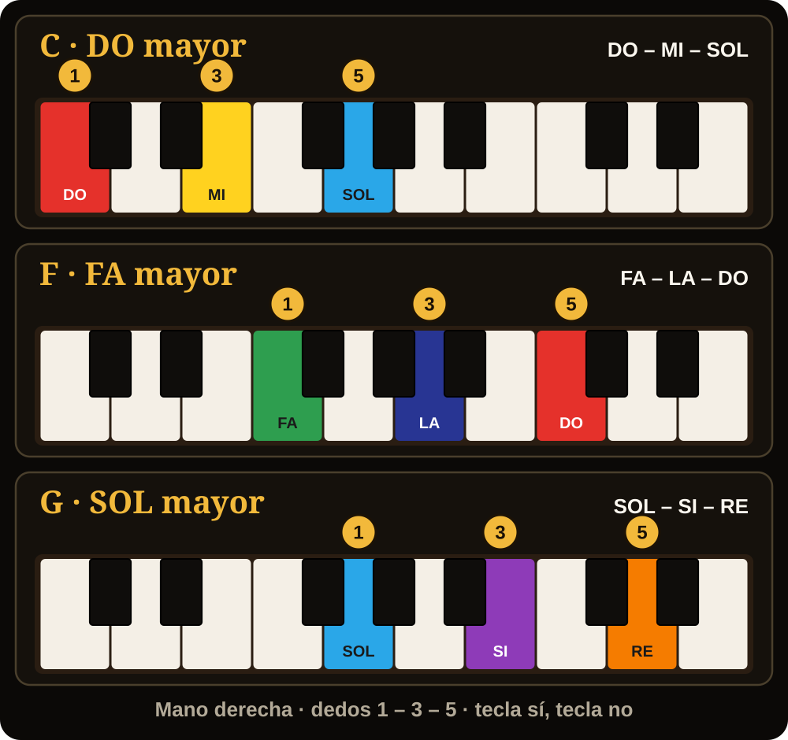
Clases 10 y 12Tríadas C, F y GMano derecha con los dedos 1 – 3 – 5: tecla sí, tecla no.Clase 11Escala de Do mayorEl paso del pulgar: después de MI, el 1 pasa por debajo hasta FA.
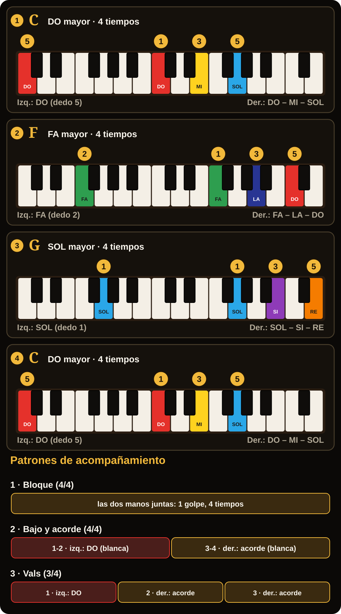
Clase 11Mi primer acompañamientoC – F – G – C: la mano izquierda toca el bajo y la derecha el acorde. Abajo, tres patrones para acompañar.Clase 12Cómo se lee un cifradoLa letra vale hasta que aparece otra. Dos letras en un compás: 2 tiempos cada una.